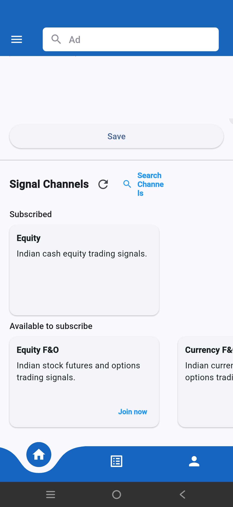
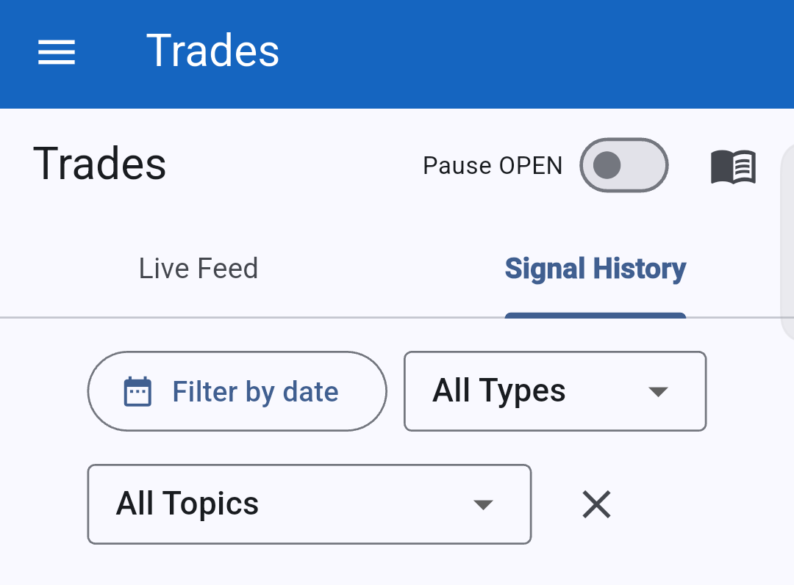
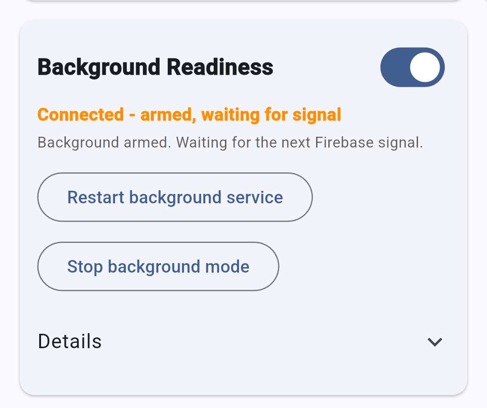

Choose a signal source, set your rules, and connect your broker. Vyapar Sanket helps you review signals or automate eligible opening orders from your Android phone.
Sandbox demo Partner signal → Your phone → Your broker
Sandbox demo
Send a sample partner signal through your phone’s settings. Every order here is simulated.
In Manual mode, an eligible opening signal waits at your phone. Confirming it sends a simulated order to the broker. A closing signal always waits for confirmation.
Ready for a sample signal.
Sample position is open.
How it works
From signal to decision
A partner publishes
Your selected source sends an opening or closing signal to a topic you follow.
Your phone checks
Vyapar Sanket receives the signal and checks your configuration and broker connection.
Your rules apply
Review eligible openings in Manual or let Automatic handle them. Closing a position always needs your confirmation.
Your broker processes
Check the order status and resulting position in your own broker account. An order can be delayed, rejected or partially filled.
Inside the Android app
See the controls on your phone

HomeBrowse Signal Channels and discover available topics.

TradesSwitch from Live Feed to Signal History to filter past signals by date, type or topic.

ProfileCheck Background Readiness to see whether the app is waiting for a signal.
User control
Your account. Your settings.
You select the sources you follow and configure handling for each topic. Review signals on Android and monitor orders directly with your broker.
Choose your goal
Short-term trading
Follow shorter signal cycles and review entry and exit decisions for active trades.
Long-term investing
Follow investment signals aligned with a longer holding period.
March–October 2026
Historical gross signal returns
Research360 closed signals, grouped by exit month and holding period. Each percentage adds together the returns on individual signals. An account’s return also depends on which trades were taken, their size and execution costs.
Best intraday month421.88%
Apr 2026 gross signal return
Best swing month250.12%
Apr 2026 gross signal return
Best long-term month125.11%
May 2026 gross signal return
Gross signal return by monthSwing signals had a negative total in March, September and October.
IntradaySwingLong Term
Mar248.53%-124.94%4.50%
Apr421.88%250.12%2.34%
May329.97%164.34%125.11%
Jun339.11%177.47%38.08%
Jul239.59%197.67%19.28%
Aug98.73%184.03%94.63%
Sep283.55%-110.73%44.03%
Oct232.31%-470.19%38.45%
Closed trades by monthTotal across the three holding periods.
Mar 20264,033
Apr 20265,088
May 20264,348
Jun 20264,754
Jul 20265,557
Aug 20265,171
Sep 20265,466
Oct 20263,950
Monthly gross signal returns, win rates and closed trade counts
Month
Intraday
Swing
Long Term
Oct 2026
Return: 232.31%Win: 61.18%Trades: 3,684
Return: -470.19%Win: 47.33%Trades: 262
Return: 38.45%Win: 100.00%Trades: 4
Sep 2026
Return: 283.55%Win: 57.65%Trades: 5,122
Return: -110.73%Win: 54.46%Trades: 336
Return: 44.03%Win: 100.00%Trades: 8
Aug 2026
Return: 98.73%Win: 58.92%Trades: 4,980
Return: 184.03%Win: 60.80%Trades: 176
Return: 94.63%Win: 73.33%Trades: 15
Jul 2026
Return: 239.59%Win: 58.40%Trades: 5,324
Return: 197.67%Win: 61.03%Trades: 213
Return: 19.28%Win: 75.00%Trades: 20
Jun 2026
Return: 339.11%Win: 59.43%Trades: 4,570
Return: 177.47%Win: 63.89%Trades: 180
Return: 38.08%Win: 75.00%Trades: 4
May 2026
Return: 329.97%Win: 59.50%Trades: 4,193
Return: 164.34%Win: 63.45%Trades: 145
Return: 125.11%Win: 80.00%Trades: 10
Apr 2026
Return: 421.88%Win: 61.10%Trades: 4,936
Return: 250.12%Win: 69.39%Trades: 147
Return: 2.34%Win: 60.00%Trades: 5
Mar 2026
Return: 248.53%Win: 60.50%Trades: 3,934
Return: -124.94%Win: 41.84%Trades: 98
Return: 4.50%Win: 100.00%Trades: 1
How the figures are calculated
Intraday trades close on the same day. Swing trades close in 1–90 days and long-term trades in 91 days or more. Only months with closed trades in all three groups are included.
Figures exclude brokerage, taxes, slippage, execution delays and app or partner charges. Individual results also depend on allocation and user settings. Past performance does not guarantee future results.
Getting started
Set up Vyapar Sanket
Have your Layr0 account, licence and supported broker connection ready. Follow the registration video for account setup and the IMC documentation for the connector.